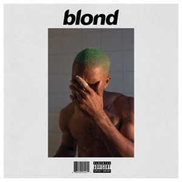

Leadership
The Sideline Is a Vantage, Not a Consolation


Everyone on that field was bigger than me. Everyone. Including, and I did check, a kicker.
Freshman year I had never played a down in my life. I was one of very few Asian kids in the programme. And I was the worst guy out there, which my friends told me regularly and which was simply true. I was nowhere near starting. I was not going to be the story that season or the next one.
That hurt for about two years. Not in a big dramatic way. In the small daily way, at practice, a little bit every afternoon.
Then I stopped watching the ball, and I still could not tell you the day it happened.
What you can see from four feet off the field
Nobody tells you this about a sideline. A guy out there sees his assignment. He sees the man across from him and the next two seconds, and that is not a flaw, that is the job, and the good ones protect that tunnel with their lives.
But somebody has to watch the whole thing. And it turns out that somebody is whoever has the time.
So I started seeing things. The left tackle going quiet in the second quarter and nobody catching it. The safety pressing because he was angry about something from before the game. The sophomores not talking to each other any more, which I learned is always the first sign. Nobody hands you that job. You just start doing it, and one day you look up and realise you have been doing it for months.
People arrive one at a time
A team is not a unit. It is forty separate difficult conversations wearing the same colour.
The corner who just got beaten deep does not want a speech. He wants you to sit down next to him and say nothing for a minute, and if you talk during that minute you have made it worse. The lineman who is furious needs to be furious somewhere else first, before he says the thing he cannot take back. Two completely different people, nine feet apart, needing opposite things.
I got good at working out which one was in front of me before I opened my mouth. That is the most useful thing football ever gave me, and it had nothing to do with a weight room.
Monday is the whole job
Everybody thinks the hard part is losing. It is not. Friday is loud and then it is over.
Monday is the hard part. Monday is quiet and Monday does not end. Forty guys got beaten in front of their families, it is cold now, and every one of them is carrying fresh evidence that maybe they are not as good as they hoped. Getting that group back out to run it again properly is the whole job.
Anybody is useful when it is going well. I got good at Mondays.
The game is bigger than the player
This is the part that changed me and I want to say it plainly. My snap count was never going to be the story. I knew that. And I spent two years letting it make me smaller, which still annoys me to think about.
Then it stopped mattering. No moment, no speech, nothing. It just quit being the thing I measured myself with. And the second I stopped counting reps I got far more useful, because I could see the whole field instead of my own small rectangle of it. There is a real freedom in working out that you are not the main character. It hands you back all the attention you had been spending on yourself, and that is a lot of attention.
They voted me captain. I did not play much.
I think about that more than anything on my awards page, because it is the only one I did not get by being good at something.
And now there is lacrosse
I play lacrosse at USC now. I picked up a stick for the first time at the tryout, in front of people who had been holding one since they were eight, so you can imagine how the opening weeks went.
And I am right back to it. I am the one making jokes at practice. I am the one laughing too loud and yelling for somebody who just did something good, and I mean genuinely yelling, in a way that has been commented on.
Not because I have given up on being good. I train hard. I compete. I want to win badly and I am not going to pretend otherwise, because that would be its own kind of lie.
It is only that I worked out a long time ago that being the best was never the thing I was actually there for. I was there for the other forty people. I like them. I like watching somebody get better at something. I like being the reason a bad practice turned around.
Which is the same job I had at fifteen, standing on a sideline in the cold. I am just holding a different stick.
If you are building a team and want to argue about any of this, I am easy to reach. fyruan@usc.edu